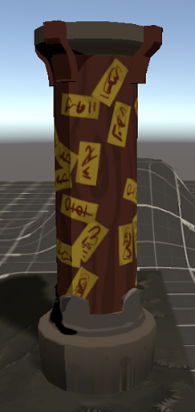

Terrain Blending 프로젝트에서는 Terrain의 텍스쳐를 배경애셋에 자연스럽게 합치는 기능을 넣어 주었다. 크게 두가지 정보를 필요로 하는데 한 가지는 terrain의 순수한 색 정보이고 다른 하나는 terrain의 depth texture이다. 이 두 가지 정보는 Editor 상에서 미리 텍스쳐를 Bake를 하게된다.
Mask type은 크게 두 가지인데 World는 애셋의 vertex position의 위치와 depth의 차이를 기반으로 작동한다. Texture 방식의 경우 texture의 채널 한개를 mask용으로 사용하여 마스킹된 부분에만 terrain 텍스쳐의 영향을 받도록 만들었다.
| Mask Type | Blending 미적용 | World | Texture |
| 적용 예시 |  | ||
| Mask |
△